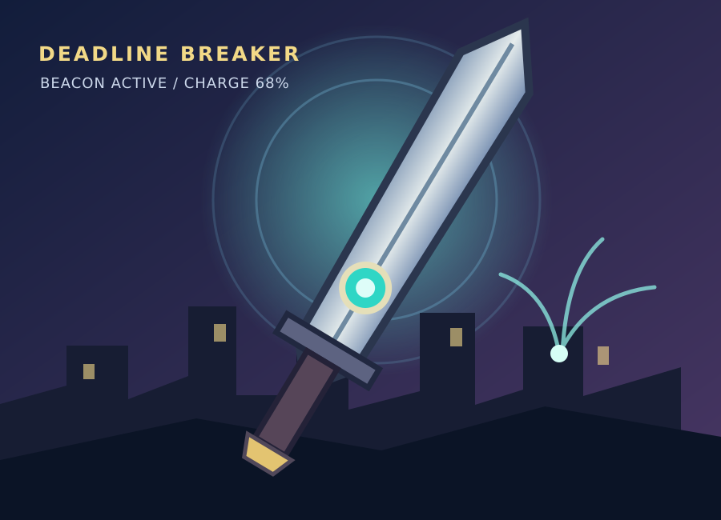

Three fun facts about me
- I collect broken headphones because I keep thinking I can fix them.
- My sword can also pick up radio signals, but it gets stuck in doorways.
- I know every shortcut in Neon City, but I lose my room key all the time.

This is the Deadline Breaker, the sword I built after the blackout.
One more random fact
Click the button to learn something else about me.
Neon City battle
A Static Wisp is blocking my path. Pick a hero name and help me fight it in a simple turn-based battle.
Your hero
HP: 18 / 18
Potions: 1
Static Wisp
HP: 20 / 20
Choose a command by clicking, or press A to attack and H to use a potion. You have one potion that restores 10 HP.
Enter a hero name and start the battle.
Battle log
- Your turns will appear here.
Survival guide for working with me
- Tell me the plan and when we need to finish it.
- Bring a flashlight. My sword does not stay charged forever.
- If I get quiet, give me a minute. I am probably thinking of another route.
- If I say I can do everything myself, please ignore me and help anyway.
My greatest weaknesses
My sword needs electricity, so I cannot rely on it when the battery runs out. I also try to solve problems alone and take too long to ask for help. I would rather take the stairs than get into an elevator.
My future ambitions
I want to help restore the city's communication network so people can contact each other during a blackout. I would also like to finish my degree, fix at least one pair of headphones, and maybe find a sword that is easier to carry.